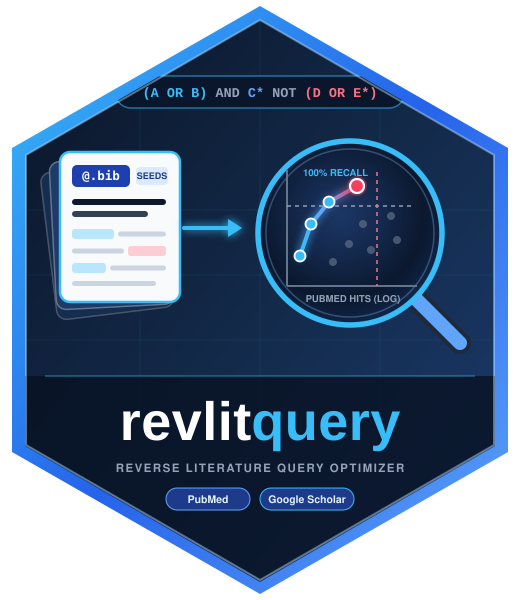
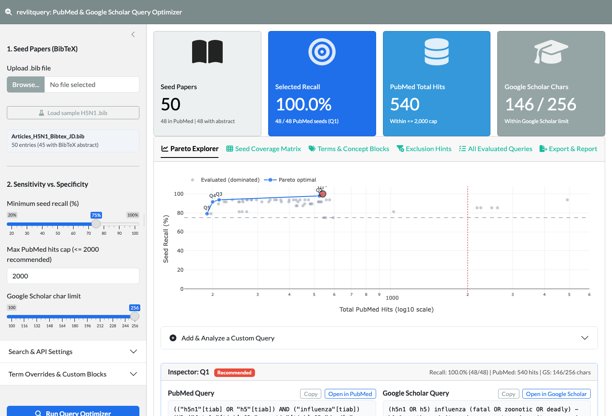
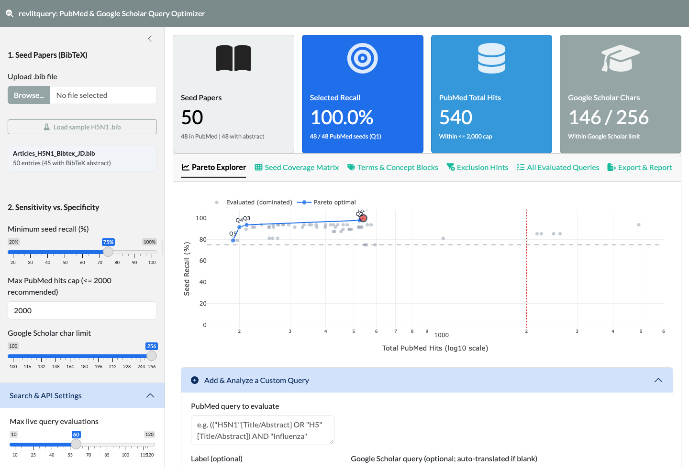
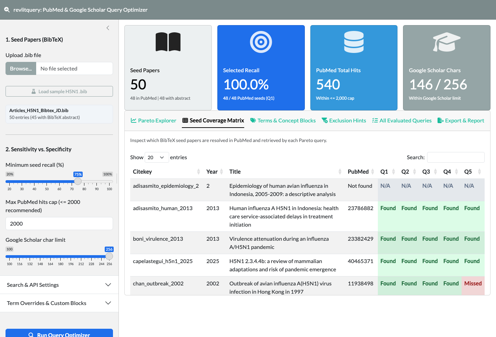
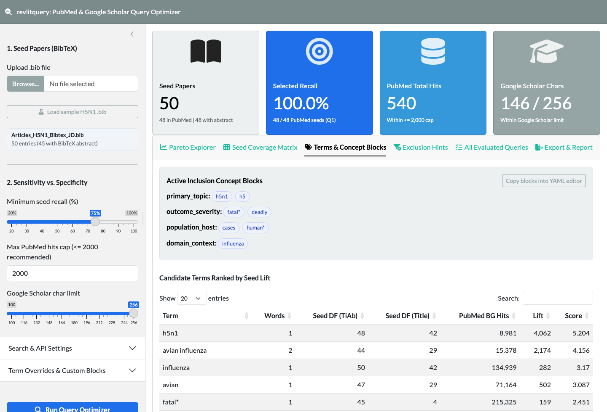
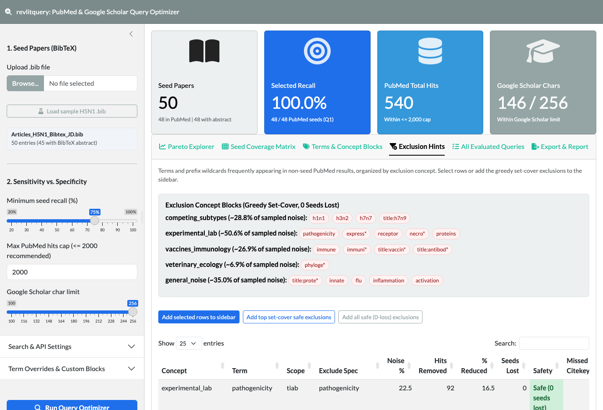
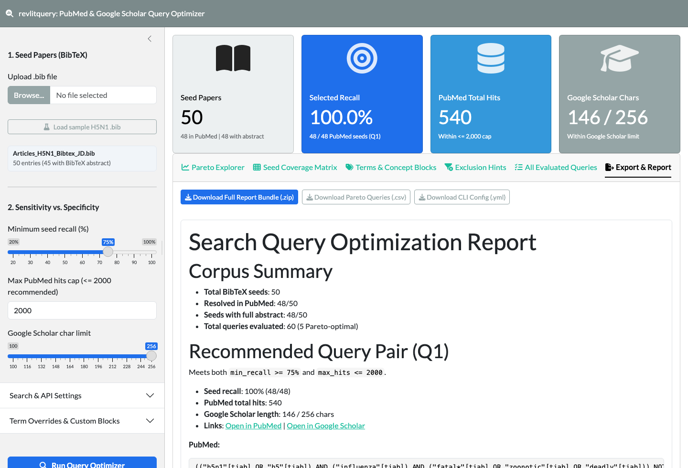

Interactive Shiny Interface Guide
Source:vignettes/shiny-interface.Rmd
shiny-interface.RmdOverview
revlitquery includes an interactive Shiny
dashboard built with bslib, plotly,
and DT to pilot the reverse literature review search query
optimizer. The dashboard allows you to:
-
Upload any
.bibseed corpus (or load the built-in H5N1 demo dataset). -
Tune sensitivity vs. specificity targets
(
Minimum seed recall (%),Max PubMed hits cap, andGoogle Scholar char limit). - Explore the live Pareto frontier comparing total PubMed hit volume (log scale) against seed recall (%).
- Benchmark your own custom PubMed/Google Scholar queries alongside automatically discovered queries.
- Inspect paper-by-paper coverage across all Pareto-optimal and custom queries.
-
Review inclusion concept blocks and concept-grouped
exclusion hints (
competing_subtypes,experimental_lab,vaccines_immunology,veterinary_ecology,general_noise) with one-click addition to your query exclusions. -
Export a reproducible report bundle
(
.zip,.csv, and CLI.ymlconfig).
Launching the Shiny Application
From an interactive R session:
library(revlitquery)
# Launch a fresh interactive session
run_revlitquery_app()If you have already run optimize_search_queries() in R,
you can also open the dashboard pre-populated with your optimization
results:
res <- optimize_search_queries(
bib_path = "path/to/seed_articles.bib",
output_dir = "output",
min_recall = 0.90,
max_hits = 1000
)
run_revlitquery_app(
initial_result = res,
initial_bib_label = "seed_articles.bib"
)Step-by-Step Walkthrough of the Interface
1. Pareto Explorer & Query Inspector
When the application opens (and after clicking Run Query Optimizer in the left sidebar), the Pareto Explorer tab displays:
-
Left Sidebar:
-
1. Seed Papers (BibTeX): Upload a
.bibfile or click Load sample H5N1 .bib. A status pill shows the number of loaded entries and how many contain abstracts. -
2. Sensitivity vs. Specificity: Adjust the target
Minimum seed recall (%) (e.g.,
75%or90%), Max PubMed hits cap (default2000, or1000for tighter specificity), and Google Scholar char limit (<= 256). Moving the recall slider or changing the hit cap dynamically updates the recommended query and plot threshold lines without re-querying PubMed.
-
1. Seed Papers (BibTeX): Upload a
-
Top Value Boxes: Summarize total seed papers (and
how many resolved in PubMed with abstracts), the currently selected
query’s seed recall (
100.0%,48 / 48 PubMed seeds), total PubMed hits (540, within the<= 1,000cap), and Google Scholar character count (146 / 256). -
Interactive Pareto Frontier Plot: Plots every
evaluated query by PubMed Total Hits (log scale) on the
x-axis and Seed Recall (%) on the y-axis:
- Red star: The recommended Pareto-optimal query meeting both your minimum recall and maximum hit cap.
-
Blue circles: All non-dominated Pareto frontier
queries (
Q1,Q2, …). - Gray circles: Dominated candidate queries evaluated during Stage 1 and Stage 2 search.
- Clicking any point on the plot (or any row in the Pareto table below) loads that query into the Selected Query Inspector card.
- Selected Query Inspector Card: Displays side-by-side PubMed Query and Google Scholar Query boxes with one-click Copy buttons, Open in PubMed / Open in Google Scholar verification links, and the list of any missed seed citekeys.

Figure 1: The Pareto Explorer tab showing the sensitivity-specificity Pareto frontier, summary value boxes, and Selected Query Inspector card (100% seed recall in 540 PubMed hits).
2. Custom Query Benchmarking & Sidebar Term Overrides
Expanding the accordions in the sidebar and main panel reveals advanced controls:
-
Search & API Settings (sidebar):
Control
Max live query evaluations,Max concept blocks(1..4),Max terms per block, disk caching (.cache/), and optionalNCBI_EMAIL/NCBI_API_KEYcredentials. -
Term Overrides & Custom Blocks
(sidebar):
-
Required terms: Force specific terms (e.g.,
h5n1) to appear in the primary concept block. - Banned candidate terms: Exclude generic phrases from candidate extraction.
-
Exclude terms (
NOT/-): Add explicit exclusion terms, prefix wildcards (e.g.,vaccin*), or title-scoped exclusions (e.g.,title:ferret*). - Custom concept blocks (YAML): Manually edit or paste concept blocks in YAML format, or click Copy discovered blocks into editor to fine-tune the automatically discovered PICO blocks.
-
Required terms: Force specific terms (e.g.,
-
Add & Analyze a Custom Query (main
panel): Paste any existing PubMed boolean query (such as a manual
search strategy from a published systematic review), optionally assign a
label (e.g.,
"Manuscript original"), and click Evaluate & Add Query. The app evaluates its live PubMed hit count and exact seed recall, auto-translates it into Google Scholar syntax, and plots it directly on the Pareto chart (as a purple diamond).

Figure 2: Expanded ‘Term Overrides & Custom Blocks’ sidebar panel and ‘Add & Analyze a Custom Query’ benchmarking drawer.
3. Seed Coverage Matrix
The Seed Coverage Matrix tab shows a paper-by-paper
breakdown of your BibTeX corpus across every Pareto-optimal query
(Q1, Q2, …) and any custom benchmark
queries:
-
PubMed column: Links directly to each resolved
article’s PMID on PubMed (or indicates
Not in PMfor gray literature / non-indexed reports). -
Query columns (
Q1,Q2, …): Color-coded cells indicate whether each seed paper is Found (green), Missed (red), or N/A (gray, not indexed in PubMed). This makes it easy to identify outlier seed papers that require an additional synonym in a concept block.

Figure 3: The Seed Coverage Matrix tab displaying per-article retrieval status across Pareto-optimal queries Q1-Q5.
4. Terms & Concept Blocks
The Terms & Concept Blocks tab exposes the internal vocabulary discovery stage:
-
Active Inclusion Concept Blocks: Displays the
automatically discovered PICO / domain concept blocks (e.g.,
primary_topic: h5n1 | h5,outcome_severity: fatal* | deadly,population_host: cases | human*, anddomain_context: influenza) as pill badges, with a button to copy them into the YAML editor for manual editing. -
Candidate Terms Ranked by Seed Lift: Lists every
extracted unigram, bigram, trigram, and synthesized prefix wildcard
(
*) along with its seed document frequency in Title/Abstract (Seed DF (TiAb)), Title document frequency (Seed DF (Title)), live PubMed background hit count (PubMed BG Hits), specificity lift (Lift), and composite score (Score).

Figure 4: The Terms & Concept Blocks tab showing active inclusion concept blocks and candidate terms ranked by seed lift over PubMed background frequency.
5. Concept-Grouped Exclusion Hints
When a query retrieves too many irrelevant PubMed hits,
revlitquery performs timeline-stratified sampling of
non-seed PubMed articles retrieved by your query, synthesizes prefix
wildcards (*) and title:-scoped exclusions,
verifies exact hit reductions against PubMed, and organizes candidate
exclusions into scientific concepts:
-
Exclusion Concept Blocks (Greedy Set-Cover, 0 Seeds
Lost): Summarizes the top zero-loss exclusion terms grouped by
domain concept (
experimental_lab,competing_subtypes,vaccines_immunology,veterinary_ecology,general_noise) and reports the percentage of sampled non-seed noise covered by each block. -
Quick-Add Action Buttons:
-
Add selected rows to sidebar: Appends any rows you
highlight in the table to the sidebar’s
Exclude terms (NOT / -)box. -
Add top set-cover safe exclusions: Appends the
greedy set-cover exclusion set (maximizing orthogonal noise removal with
0seed loss). - Add all safe (0-loss) exclusions: Appends all verified zero-loss exclusion terms.
-
Add selected rows to sidebar: Appends any rows you
highlight in the table to the sidebar’s
-
Exclusion Hints Table: Displays up to 35 ranked
exclusion candidates with their concept category, scope
(
tiabvs.title), noise frequency (Noise %), verified PubMed hits removed (Hits Removedand% Reduced),Seeds Lostcount, safety badge (Safe (0 seeds lost)), and exact PubMed (NOT ...) and Google Scholar (-.../-intitle:...) clauses.

Figure 5: The Exclusion Hints tab showing greedy set-cover exclusion concept blocks and verified hit reductions.
6. Export & Report
The Export & Report tab provides one-click downloads and an inline preview of the generated Markdown report:
-
Download Full Report Bundle (
.zip): Containsreport.md,pareto_queries.csv,all_evaluated_queries.csv,seed_resolution.csv,seed_coverage_matrix.csv,exclusion_hints.csv, andpareto_frontier.png. -
Download Pareto Queries (
.csv): Spreadsheet of the non-dominated PubMed and Google Scholar query pairs and verification URLs. -
Download CLI Config (
.yml): Exports your current sidebar settings, required/banned/exclude terms, and custom concept blocks as a YAML configuration file ready forRscript run_query_optimizer.R --bib seeds.bib --config optimizer_config.yml.

Figure 6: The Export & Report tab with one-click bundle downloads and live Markdown report preview.